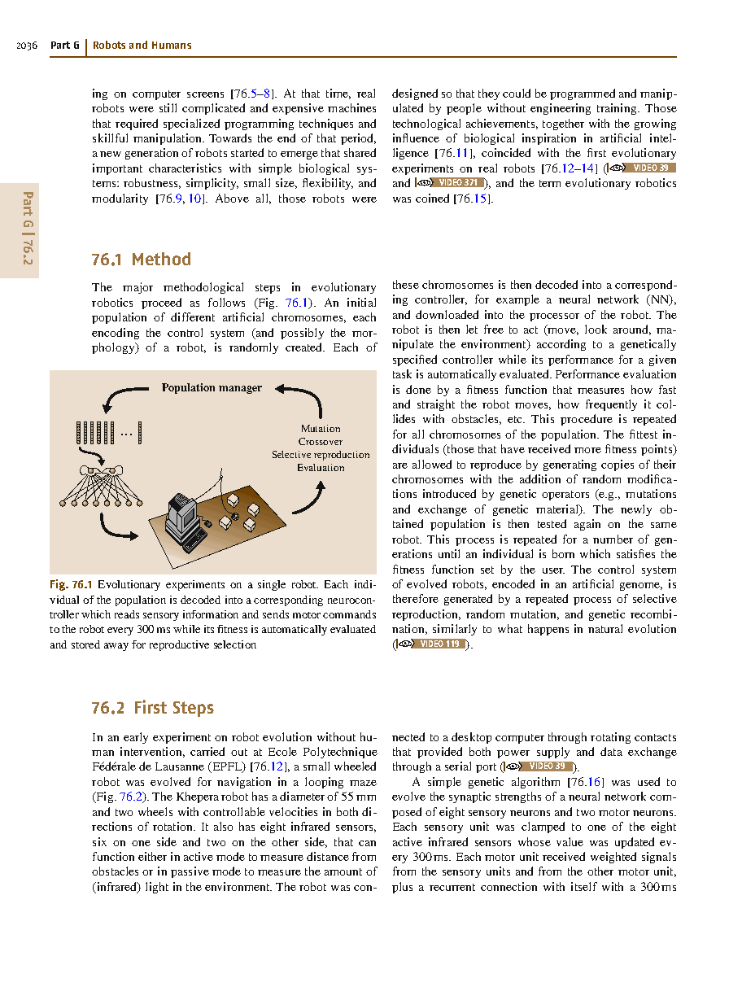
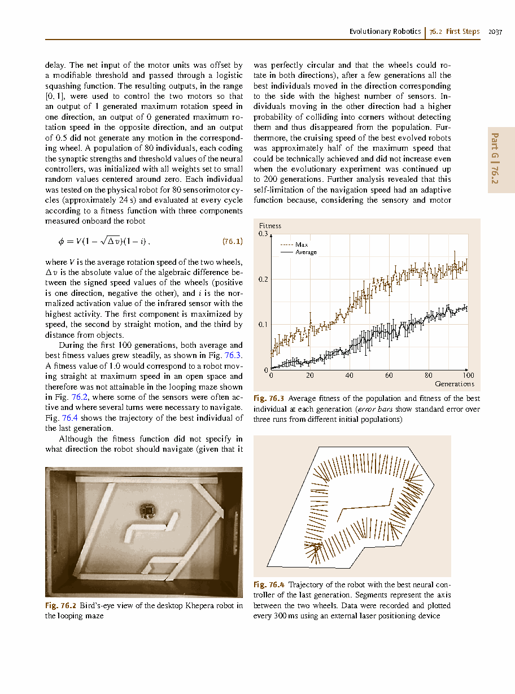
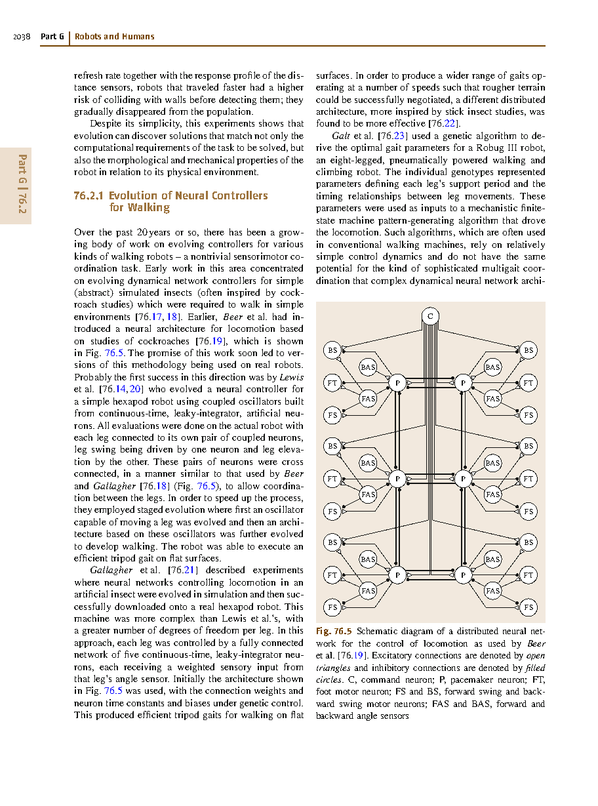

| Title | Evolutionary Robotics（进化机器人学——从基因型到行为的自动设计范式） |
| Authors | Stefano Nolfi（意大利国家研究委员会 CNR-ISTC），Josh Bongard（佛蒙特大学），Phil Husbands（萨塞克斯大学），Dario Floreano（洛桑联邦理工学院 EPFL） |
| Affiliation | CNR-ISTC（罗马） / University of Vermont / University of Sussex / EPFL——四所进化机器人学核心研究机构联合撰写 |
| Venue | Springer Handbook of Robotics（第 2 版），2016 年，第 76 章，pp. 2035–2068。由 B. Siciliano 和 O. Khatib 主编——机器人学领域的"圣经级"手册 |
| DOI / Links | 10.1007/978-3-319-32552-1_76 | 章节类型：Handbook Chapter (Review) | 页数：34 页 | 引用量：200+ |
| TL;DR | 进化机器人学将机器人控制器、神经网络拓扑乃至身体形态编码为人工基因型，以任务适应度为驱动力，通过种群搜索自动发现高效的感知-行动闭环策略。本章系统综述了四大核心议题：（1）基因型-表型编码（直接编码 vs 间接/发育编码）；（2）形态-控制协同进化（身体与大脑同时优化）；（3）仿真到真实迁移（Reality Gap 的成因与缓解策略）；（4）在线进化适应（机器人终身进化以应对环境变化）。将进化机器人从"实验室新奇"推进为一种系统化的机器人自动设计范式。 |
| Inspiration Source | → What Insight It Inspired | Type |
|---|---|---|
| 达尔文自然选择理论（Darwin, 1859）——种群通过变异、遗传和选择在世代间积累适应性特征 | → 将机器人设计视为搜索问题而非工程构造问题。不需要预先知道"好的控制器长什么样子"——只需定义适应度函数（任务完成度），让种群自我改进。这解放了设计者，使其不需要对解空间做任何先验假设 | 范式 |
| 发育生物学（Developmental Biology）——从紧凑的基因组通过细胞分裂、分化和形态发生构建复杂多细胞生物体 | → 间接编码（Indirect Encoding）：用一个紧凑的基因型通过发育规则（如细胞自动机、L-system、基因调控网络 GRN）生成大型复杂的神经网络或身体形态。这解决了直接编码"基因型长度 ∝ 表型复杂度"的可扩展性瓶颈——就像人类 30 亿碱基对编码了 860 亿神经元一样 | 表示 |
| 神经可塑性与学习（Neural Plasticity）——生物体在生命周期中根据经验调整突触强度，学习受基因调控的学习规则约束 | → 进化学习规则：不是进化最终权重，而是进化决定"如何学习"的局部可塑性规则（如 Hebbian 规则中的学习率、衰减因子）。这让机器人在部署后能够在线适应环境变化——进化负责在演化时间尺度上塑造学习偏置，学习负责在个体生命周期中处理非平稳性 | 机制 |
| 体内平衡与自组织（Homeostasis & Self-Organization）——生物系统在没有中央控制器的情况下从局部交互中自发形成全局有序结构和行为 | → 分布式形态发生：在形态-控制协同进化中，身体的几何结构并非由设计师规定，而是由局部发育规则（如细胞分裂、分化、凋亡）从基因型生成。进化搜索的是"如何生长"的规则，而非"最终形状"的蓝图——这更接近自然界建造身体的方式 | 策略 |
flowchart TB
subgraph INIT["初始化阶段"]
POP["随机初始化种群 · N个随机基因型"]
end
subgraph DECODE["解码阶段: 基因型 → 表型"]
DIRECT["直接编码: 每个基因直接对应一个突触权重或身体参数"]
INDIRECT["间接编码: 发育规则（GRN/CPPN/L-system）生成大型网络或形态"]
BODY["身体形态: 从基因型解码肢体结构、传感器布局、材料属性"]
CTRL["神经网络控制器: 从基因型解码权重、拓扑、神经元类型、学习规则"]
end
subgraph EVAL["闭环评估阶段"]
SIM["仿真评估: 低成本并行 · 存在Reality Gap · 可注入多样性"]
REAL["实体评估: 真实物理 · 无Gap · 昂贵缓慢 · Embodied Evolution"]
BEHAVIOR["行为测量: 导航距离 · 避障成功率 · 操作精度 · 能耗"]
FITNESS["适应度计算: F = 行为指标加权和 · 多目标Pareto优化"]
end
subgraph EVOLVE["进化操作阶段"]
SEL["选择: 锦标赛/轮盘赌 · 精英保留 · 保持多样性(物种分化)"]
MUT["变异: 高斯噪声(连续) · 结构变异(拓扑) · 发育规则变异(间接)"]
XOVER["交叉: 权重重组 · 拓扑对齐交叉 · 同源基因匹配"]
NEXT["新一代种群 · 循环迭代 · 直到收敛或达到评估预算"]
end
POP --> DIRECT & INDIRECT
DIRECT & INDIRECT --> BODY & CTRL
BODY & CTRL --> SIM & REAL
SIM & REAL --> BEHAVIOR --> FITNESS
FITNESS --> SEL --> MUT & XOVER --> NEXT
NEXT -.->|"下一代"| DIRECT
REAL -.->|"少量数据反馈 · 校正仿真模型"| SIM
SIM -.->|"多样性注入 · 随机化物理参数"| REAL
classDef init fill:#fef7ed,stroke:#f59e0b,stroke-width:2px,color:#92400e
classDef decode fill:#e8f0fe,stroke:#3b82f6,stroke-width:2px,color:#1d4ed8
classDef eval fill:#f0ebfd,stroke:#8b5cf6,stroke-width:2px,color:#6d28d9
classDef evolve fill:#e6f7ee,stroke:#10b981,stroke-width:2px,color:#047857
classDef result fill:#dbeafe,stroke:#2563eb,stroke-width:2px,color:#1e40af
class POP init
class DIRECT,INDIRECT,BODY,CTRL decode
class SIM,REAL,BEHAVIOR,FITNESS eval
class SEL,MUT,XOVER,NEXT evolve
flowchart LR
subgraph DIRECT_ENC["直接编码"]
direction TB
DG["基因型: 固定长度实数向量
[w1, w2, ..., wn, l1, l2, ...]"]
DP["表型: 每个参数直接由对应基因确定
基因i → 权重i"]
DG --> DP
DLIM["限制: 基因型长度 = O(n) · n个参数
无模块化 · 无重复结构 · 无正则性"]
end
subgraph INDIRECT_ENC["间接/发育编码"]
direction TB
IG["基因型: 紧凑的发育规则
GRN调控网络 / CPPN模式生成 / L-system语法"]
IDEV["发育过程: 基因型表达的规则
在胚胎发育模拟中迭代执行"]
IP["表型: 大型复杂结构涌现
模块化 · 对称 · 重复模式 · 分形"]
IG --> IDEV --> IP
IADV["优势: 基因型长度 = O(1) · 可扩展
自动产生正则性 · 模仿生物发育"]
IDEV --> IADV
end
DIRECT_ENC -->|"编码选择取决于
任务复杂度和搜索预算"| INDIRECT_ENC
INDIRECT_ENC -->|"间接编码的发育过程
可被进化本身优化"| DIRECT_ENC
classDef direct fill:#e8f0fe,stroke:#3b82f6,stroke-width:2px,color:#1d4ed8
classDef indirect fill:#f0ebfd,stroke:#8b5cf6,stroke-width:2px,color:#6d28d9
class DG,DP,DLIM direct
class IG,IDEV,IP,IADV indirect
flowchart TD
subgraph PHASE1["阶段1: 问题定义"]
direction LR
P1A["任务描述: 导航/避障/操作/协作/群体"] --> P1B["适应度设计: 行为指标→数值 · 多目标? · 稀疏奖励?"] --> P1C["编码选择: 直接vs间接 · 进化什么? 权重/拓扑/形态/学习规则"]
end
subgraph PHASE2["阶段2: 仿真进化"]
direction LR
P2A["种群初始化 · 100-1000个随机个体"] --> P2B["每代: 解码→评估→选择→变异 · 100-1000代"] --> P2C["多样性维护: 物种分化 · 新奇搜索 · 质量-多样性"]
end
subgraph PHASE3["阶段3: Reality Gap跨越"]
direction LR
P3A["仿真随机化: 噪声物理参数 · 多环境条件 · 域随机化"] --> P3B["增量迁移: 逐渐增加仿真保真度"] --> P3C["实体校准: 少量实体测试→修正仿真→再进化"]
end
subgraph PHASE4["阶段4: 部署与终身适应"]
direction LR
P4A["最优个体→真实机器人"] --> P4B["在线进化或学习: 终身适应环境变化"] --> P4C["人类反馈: 交互式进化 · 偏好学习 · 安全性约束"]
end
PHASE1 -->|"设计参数"| PHASE2
PHASE2 -->|"最优基因型"| PHASE3
PHASE3 -->|"验证通过"| PHASE4
P3C -.->|"仿真偏差数据反馈"| P2B
P4B -.->|"新环境挑战"| P1B
classDef p1 fill:#fef7ed,stroke:#f59e0b,stroke-width:2px,color:#92400e
classDef p2 fill:#e8f0fe,stroke:#3b82f6,stroke-width:2px,color:#1d4ed8
classDef p3 fill:#f0ebfd,stroke:#8b5cf6,stroke-width:2px,color:#6d28d9
classDef p4 fill:#e6f7ee,stroke:#10b981,stroke-width:2px,color:#047857
class P1A,P1B,P1C p1
class P2A,P2B,P2C p2
class P3A,P3B,P3C p3
class P4A,P4B,P4C p4
| 类别 | 内容 | 维度 |
|---|---|---|
| 输入 | 任务定义：适应度函数 $F$（行为指标到标量的映射）+ 编码方案（直接/间接）+ 机器人动力学模型（仿真或实体） | 任务空间维度取决于环境复杂度——从简单的"距目标距离"到包含多目标（速度+能耗+安全性）的复合指标 |
| 输出 | 最优基因型 $\theta^*$ 及其对应的表型 $\pi_{\theta^*}$：一个在闭环交互中表现最优（或接近最优）的完整机器人系统设计 | 表型维度取决于编码方案：直接编码 = 数千到数万参数；间接编码 = 可从几十个基因生成数百万参数的网络 |
| 目标 | 自动发现超出人类工程师直觉的高性能机器人设计——包括非直觉的感知-行动耦合和身体-控制匹配 | 评估指标：最终适应度 + 搜索效率（达到给定适应度所需的评估次数）+ 仿真到真实迁移成功率 |
这是一个黑箱优化 + 开放式搜索问题。与监督学习不同：这里没有"正确答案"——没有给定的输入-输出对。与强化学习不同：这里不仅搜索策略参数，还搜索策略的架构本身（网络拓扑、神经元类型、身体形态）。与贝叶斯优化不同：搜索空间可能是可变维度的混合离散-连续空间（如 NEAT 中的拓扑变异可以增加/删除神经元和连接），且每次评估都需要完整的闭环仿真（数百到数千个时间步），评估成本远高于单次前向传播。本章的核心贡献是提供了一个通用框架来统一处理这些不同层次的设计自由度，并系统化地讨论各设计选择（编码方式、进化算法、评估策略、迁移方法）的适用条件和权衡。
⚠ 表头用英文，正文用中文
| Prior Method | Core Idea | Why It Fails |
|---|---|---|
| 手工设计（Manual Design） | 人类工程师根据经验和数学模型逐层设计机器人的硬件和控制算法 | 认知偏见限制搜索空间：人类倾向于选择熟悉的、可理解的、符合已有工程范式的设计——如对称的四足/六足结构、PID 控制器、分层控制架构。这排除了大量可能更优但"非正统"的方案。此外，在包含形态变量的联合搜索空间中，人类根本无法在合理时间内探索高维组合。 |
| 强化学习（Reinforcement Learning） | 通过与环境交互的经验梯度优化固定架构控制器的策略参数 | 需要可微的奖励信号和固定架构。RL 的样本效率在连续控制任务中仍然较低（通常需要数百万次交互），且最致命的是：架构本身（网络深度/宽度、连接模式、身体形态）不在搜索范围内。RL 只能在给定的架构下优化参数——如果架构本身就是瓶颈（事实上经常如此），RL 无法解决。 |
| 贝叶斯优化（Bayesian Optimization） | 用高斯过程代理模型引导低维连续空间的样本高效搜索 | 无法处理高维（>>20 维）和混合离散-连续空间。GP 的计算复杂度为 $O(n^3)$，在进化机器人学典型的高维空间中不可行。且 BO 天然假设平滑的适应度地形——在高度崎岖的机器人行为空间中，GP 的内核假设经常被违反。 |
| 传统进化算法（固定编码 EA） | 用固定长度的实数向量表示控制器参数，用标准 EA 搜索 | 不可扩展：基因型长度必须随问题复杂度增长——当需要大型网络或复杂形态时，固定向量变得极其冗长。且缺乏模块化、重复性和层次化结构——这些是生物大脑和身体的标志性特征，也是可扩展性的关键。 |
本章的核心不是单一算法，而是一个方法学框架——它将进化机器人的整个管线分解为四个正交的设计维度：（1）编码（表示什么、如何表示）；（2）进化算法（如何搜索）；（3）评估（如何衡量好坏）；（4）迁移（如何从仿真到真实）。每个维度的选择相互影响，需要系统级协同设计。以下公式涵盖了贯穿全章的核心数学原理。
LaTeX rendered by MathJax. 显示公式用 $$...$$，行内公式用 $...$。⚠ 符号解释请用中文。
| 参数 | 典型取值 | 含义 | 为什么取这个值 |
|---|---|---|---|
| 种群大小 $N$ | 50~500 | 每一代中的个体数量 | 太小 → 遗传多样性不足，过早收敛；太大 → 评估预算需求过高。对于实体进化（Embodied Evolution），通常 $N$ 较小（10-50），因为实体评估昂贵 |
| 代数 $G$ | 100~2000 | 进化循环的迭代次数 | 取决于任务复杂度和搜索空间维度。简单导航任务可能 100 代收敛；形态-控制联合进化可能需要 2000 代或更多 |
| 变异率 | 0.01~0.3（每个基因） | 每个基因发生变异的概率 | 太高 → 随机搜索，收敛困难；太低 → 搜索停滞。通常采用自适应变异率——初期高（探索），后期低（精调） |
| 精英保留比例 | 1%~10% | 直接复制到下一代的"最佳个体"比例 | 保证适应度不会退化（单调非减）。但比例太高会减少遗传多样性——通常保留 1~2 个最佳个体即可 |
| 仿真随机化参数 $M$ | 3~20 | 每个个体在不同仿真条件下的重复评估次数 | $M$ 越大 → 鲁棒性越好但评估成本翻 $M$ 倍。实践中通常选择 $M=5$~$10$，在鲁棒性和效率之间折中 |
| 基因型维度 | 10~10,000+ | 基因型向量的长度（直接编码） | 取决于 ANN 规模（每权重一基因）。间接编码可将基因型压缩到 10~100 个参数而生成 >10,000 权重的网络 |
理解进化机器人学需要掌握三个核心原理：编码-搜索协同（基因型结构决定搜索效率）、Baldwin 效应（学习引导进化）、形态计算（身体承担部分计算负载）。这三个原理共同构成了进化机器人学的理论基础。
这就是为什么编码方案不是中性的"实现细节"——它从根本上决定了进化搜索能否成功。直接编码简单地对齐了参数空间和行为空间（通常在小网络中有效），但无法产生大规模正则结构。间接编码通过发育过程引入了"基因型压缩"——几个发育参数的微小变化可以系统性地改变整个网络的行为模式——如果这个变化恰好对齐了适应度地形的结构，搜索就会极快地沿着"发育走廊"前进；如果不对齐，进化就会在发育动力学的混沌中迷失方向。
机制：学习改变了表型适应性（但不直接改变基因型），从而改变了哪些基因型被选择——经过多代，那些更容易被学习塑造成高性能表型的基因型在种群中占据优势。
效果：适应度地形被"平滑化"——原本陡峭的适应度峰变成高原。进化可以在更粗糙的粒度上搜索，学习在精细粒度上微调。
在 ER 中的应用：进化学习规则（如 Hebbian 参数），而非最终权重——让进化搜索"如何学习"而非"学习结果是什么"。
机制：生命周期中学习获得的权重直接写回基因型，传递给下一代——"后天获得性遗传"（尽管在生物学中不被接受，但在计算中可以作为优化技巧）。
效果：加速收敛——学习可以定位到更好的参数区域，然后基因层面固定下来。但可能过早收敛到局部最优。
在 ER 中的应用：仿真中常用——学习好的权重直接替换基因型，再施加变异。类似"用 RL 微调进化出的初始策略"。
📷 论文原图截图。图片保存至 figures/ 子目录。命名 fig1.png ~ fig3.png 即可自动显示。

📷 请将截图保存为figures/fig1.png本图展示了：进化机器人学的完整概念框架，从左侧的基因型编码到右侧的实体部署，跨越"搜索-评估-迁移"三大阶段。核心信息流：随机初始化的基因型种群被解码为机器人表型（神经网络控制器 + 身体形态），在仿真或实体环境中进行闭环评估获得适应度，通过选择-变异-交叉操作生成下一代，循环迭代直至收敛。

📷 请将截图保存为figures/fig2.png本图展示了：两种主流编码策略的对比。左侧的直接编码将每个网络权重映射为一个独立的实数基因——基因型空间与表型空间同构。右侧的间接编码通过发育规则（如基因调控网络 GRN 或组合模式生成网络 CPPN）将紧凑的基因型"展开"为大型表型。

📷 请将截图保存为figures/fig3.png本图展示了：Reality Gap 从成因到解决方案的完整分类体系。左侧列出了仿真与真实物理之间的三大偏差来源（模型结构偏差、参数不确定性、传感执行非理想性）。右侧将缓解策略分为四大类：仿真多样性注入、增量迁移、实体反馈校准、以及无仿真直接实体进化。
| 数据问题 | 潜在困难 | 严重程度 |
|---|---|---|
| 适应度函数设计偏差 | 如果适应度对某些行为模式存在"意外偏好"（如机器人学会原地旋转使传感器读数最大化而非实际探索），进化会忠实地优化这个"错误目标"——结果是一个在适应度指标上表现完美但在真实任务中毫无用处的机器人。重新设计适应度函数通常需要多轮试错 | ★★★★★ |
| 仿真模型不准确性 | 如果仿真模型系统地偏离真实物理（如总是低估某个关节的摩擦），进化会学习利用这个偏差（如过度依赖该关节的低摩擦特性）。在真实机器人上运行时，该策略失效。更隐蔽的是：如果一个策略在仿真中"恰好"不依赖偏差（即鲁棒策略），它可能在仿真中得分不高但真实表现良好——而进化可能过早舍弃了它 | ★★★★★ |
| 初始种群随机性 | 进化搜索的结果对初始种群的随机种子高度敏感。不同的随机初始化可能导致完全不同的收敛路径和最终解。通常需要多次独立运行并报告统计量（均值+标准差），但计算成本限制了重复次数 | ★★★★ |
| 评估预算有限 | 如果评估预算不足以支持种群充分探索搜索空间（常见于实体进化），进化可能过早收敛到局部最优。这在实践中表现为"不同的随机种子给出完全不同的最终行为"——说明搜索空间没有被充分覆盖 | ★★★★ |
| 参考文献 | 为什么重要 |
|---|---|
| Bongard (2011) — Morphological change in machines accelerates the evolution of robust behavior. PNAS 108, 1234–1239 | 证明了形态变化可以加速鲁棒行为的进化——机器人在经历身体损伤后，通过进化重新学习行走的速度比固定形态的机器人更快。这是形态计算原理最有力的实验证据。对 UAV 的启示：可变形态（可折叠机翼、可变桨距）可能帮助无人机在损伤后更快地恢复飞行能力。 |
| Lehman & Stanley (2011) — Abandoning objectives: Evolution through the search for novelty alone. Evolutionary Computation 19, 189–223 | 提出了新奇搜索（Novelty Search）——完全放弃目标驱动的适应度，只奖励行为的新颖性。在多个基准问题上，新奇搜索比传统适应度驱动进化发现了更好的解——因为它避免了"适应度欺骗"（deception）。对机器人任务的启示：有时候，探索行为空间比优化特定目标更有效。 |
| Mouret & Clune (2015) — Illuminating search spaces by mapping elites. arXiv:1504.04909 | MAP-Elites 算法——结合质量-多样性（Quality-Diversity）搜索，在行为空间中"照亮"高性能区域，产生一组而非一个高质量解。对 UAV 设计的启示：不是找一个"最优"设计，而是产生一组在不同行为维度（速度vs能耗vs稳定性）上各有所长的设计——更适合实际工程中的多目标权衡。 |
| Floreano & Keller (2010) — Evolution of adaptive behaviour in robots by means of Darwinian selection. PLoS Biology 8, e1000292 | Floreano 团队的里程碑式综述——将进化机器人学的理论与大量实体机器人实验联系起来。涵盖了从简单的导航进化到复杂的通信和合作行为进化的完整光谱。是本章（Springer Handbook）的直接前身。 |